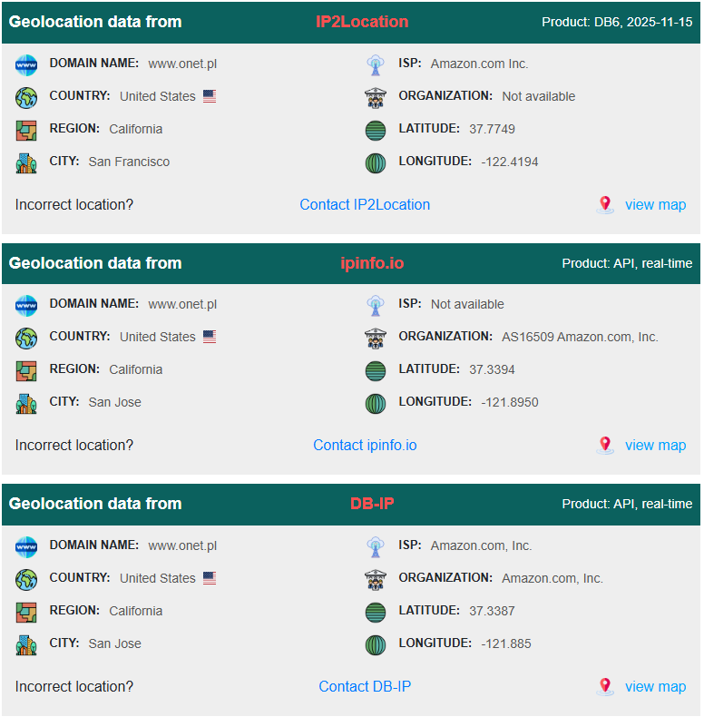
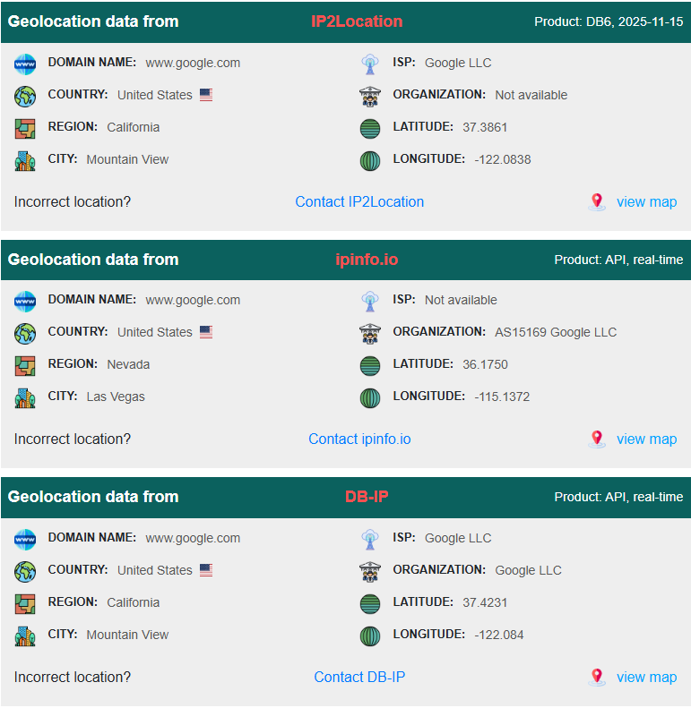
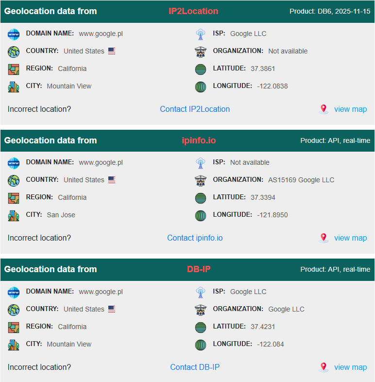

Practical part
1. Use ping, pathping, tracert to the following hosts:
The ping command main purpose is to determine whether you can reach another computer from your computer. It uses ICMP protocol to send mandatory ECHO_REQUEST datagrams to the specified host computer. When the reply is received back from the host, the ping command displays how long it took to receive the response.
The tracert command displays a list of all the routers that a packet must go through to get from the computer where tracert is run to any other computer on the Internet. Each one of these routers is called a hop, tracert makes three attempts to contact the router at each hop and displays the response time for each of these attempts. Then, it displays the DNS name of the router (if available) and the router’s IP address.
The pathping command is sort of a cross between the ping command and the tracert command, combining the features of both into one tool. When you run pathping, it first traces the route to the destination address much the way tracert does. Then, it launches into a 25‐second test of each router along the way, gathering statistics on the rate of data loss to each hop. If the route has a lot of hops, this can take a long time.
1.1 Computer in local network

1.2 www.onet.pl
Ping

Pathping

Tracert

Location of server
1.3 google.com
Ping

Pathping

Tracert

Location of server
1.4 google.pl
Ping

Pathping

Tracert

Location of server
1.5 lodman.pl
Ping

Pathping

Tracert

Location of server

1.6 Server Location
Tools used to identyfying physical location of servers
1.7 When using tracert assign consecutive hops to private/public network addresses.
In all of the above cases only 1st hop is in private network. Only devices inside my local network use private addresses. All routers further in the internet path use public IP addresses.
1.8 Check ip address and physical address of your host using ipconfig